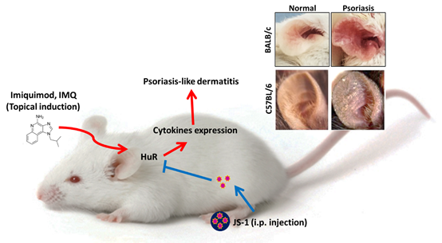
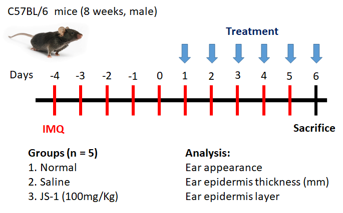
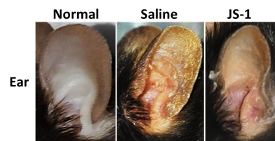
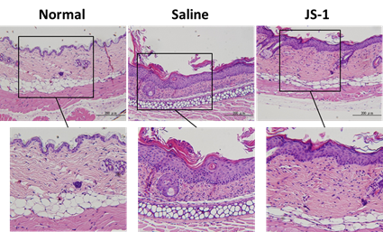
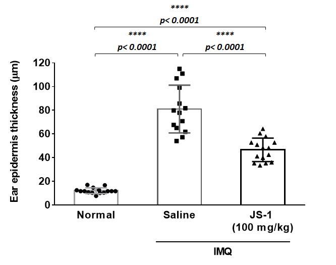
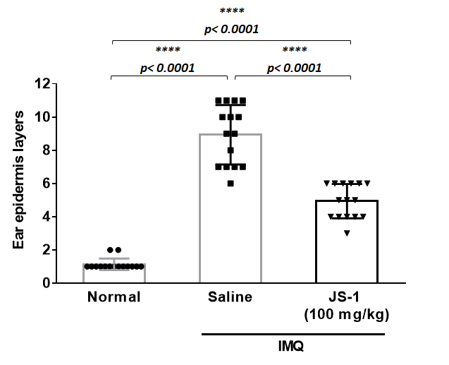

In Vivo
To understand whether JS-1 is also effective in vivo, we conducted an experiment via animal model to observe physiological changes.
We used IMQ-induced Psoriasis-like mice model to test the JS-1’s efficacy. We observed the morphology changes (ear appearance), clinical score (psoriasis area severity index, calculation score on the ear erythema, ear thickness, ear scaling, histological micro-scale measurement (ear epidermis thickness(mm) and ear epidermis proliferation layers) and cytokine array (IL-23 and VEGF) to evaluate the JS-1’s efficacy.
To conclude, JS-1 shows great efficacy on IMQ-induced Psoriasis-like mice model.
III. JS-1 as Treatment for IMQ-induced Psoriasis
The IMQ was smeared on mice’s ear to induce psoriasis [1], and once the symptoms appeared, JS-1 was soon intraperitoneally injected (100 mg/kg) once per day for five days to treat the disease (Figure. H-2 and H-5). We conducted this experiment twice on two different strains of mice, including C57BL/6 mice (8–10 weeks old, male, n=5) and BALB/c mice (8–10 weeks old, male, n=6).
 Figure. H-1. Imiquimod-induced psoriasis-like skin Inflammation in mice ears.
Observation Topic
-
1. Clinical Score: Psoriasis Area Severity Index(PASI)
We applied Psoriasis Area Severity Index (PASI score is a tool used to measure the severity and extent of psoriasis. It takes a few minutes and experience to calculate it accurately. A representative area of psoriasis is selected for each body region. The intensity of redness, thickness and scaling of psoriasis is assessed as none (0), mild (1), moderate (2), severe (3) or very severe (4) [2, 3]) to evaluate the treatment process in the experiment.
Mice were evaluated daily for inflammation in the ears as described above. The severity and incidence of the psoriasis-like skin manifestations were monitored on a scale ranging from 1 to 3 per mouse based on the severity of skin scaling on the ears: 1, weak skin peeling; 2, moderate skin peeling; and 3, heavy skin peeling with some hair loss.
We calculated clinical scores on erythema, ear thickness and ear dermis scaling every day of induction period, also on the first, third, and the fifth day of the treatment. The outcome presented statistically significant therapeutic effect after the mice being treated with JS-1.
-
2. Morphology and histology analysis
Mice were sacrificed on the fifth day for the observation of the ear appearance and ear tissue biopsy (H&E stain). We used micro-scale measurement to evaluate the ear epidermis thickness (mm) , and the ear epidermis proliferated layers (Figure. H-4 and H-8). The results showed that JS-1 significantly reduced the proliferation of the epidermis layers, indicating that intraperitoneal injection can affect immune cells’ regulation of inflammatory molecules.
-
3. cytokine array
After comparing the IL-23 (key cytokine of psoriasis) and the VEGF (angiogenesis factor) [4] of the Treatment Groups with those of the Control Group, we found there were statistically significant differences.
Mice model experiment
-
1. First Experiment on C57BL/6 mice
In the beginning, we conducted experiments on three separate groups of C57BL/6 mice (8 weeks, male, which were respectively Normal, Saline, and JS-1 (100 mg/kg). Our observation topic focused on Morphology--ear appearance and Histology--ear epidermis thickness (mm), and ear epidermis layer.
From day -4 to 5, we applied IMQ on mice’s ears to induce the psoriasis symptoms. From days 1 to 5, we injected (i.p.) a dose of saline and JS-1 separately into control groups. On day 6, we sacrificed the mice and analyzed the changes in morphology and histology.
 Figure. H-2. Scheme of animal study (C57BL/6) design.
-
(1) Morphology observation
After 5 days treatment, there were significant therapeutic effects showed on ear appearance of JS-1 (100 mg/kg) group (Figure. H-3).
 Figure. H-3 Therapeutic effects of JS-1 (100 mg/kg) on C57BL/6’s ears.
-
(2) Histological analysis
aking ear skin biopsy with H.E stain (Figure. H-4a), we evaluated the differences of ear epidermis thickness(mm) (Figure. H-4b) and the layers of cell proliferation in the dermis (Figure. H-4c) via micro-scale measurement. The data both revealed statistically significant differences(P< 0.0001, ****), which showed JS-1 significantly alleviated the psoriasis-like dermatitis.
 Figure. H-4a.
 Figure. H-4b.
 Figure. H-4c.
Figure.H-4. JS-1 alleviates psoriasis-like dermatitis. (a) Sections of ear skin(H&E stain) (b) Epidermal thickness and (c) the layers of cell proliferation in the dermis were measured using the ruler of the microscope on day 6 after treatment.
2. Second Experiment on BALB/c mice
Considering that in previous mice experiment the erythema was difficult to observe, we adopted BALB/c mice (8 weeks, male, n=6) for duplicate experiment. This time, we added a Quercetin group (50 mg/kg), a small molecular HuR inhibitor, to compare the therapeutic efficacy with JS-1.
We observed morphology--ear appearance and histology--ear epidermis thickness (mm)& ear epidermis layer, and furthermore used clinical score to track the changes daily. Besides, we also used cytokine array to analyze IL-23 (a key cytokine of psoriasis) and the VEGF (angiogenesis factor).
-